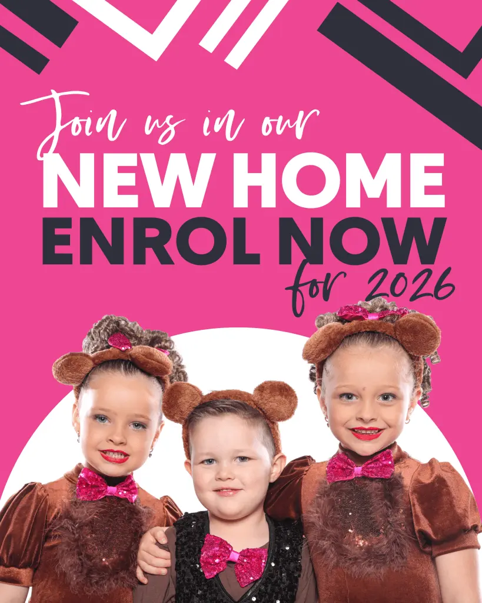

Ballet and lyrical
Poise, technique and confidence with careful teaching.

KCDanceHQ is the main school. KCCubs is its preschool programme. From there, dancers can keep growing through recreational classes for kids, teens and adults in the same friendly environment.

KCCubs deserves a clear, separated space because preschool parents are looking for reassurance, warmth and age-appropriate learning. It still sits inside the KCDanceHQ family, not above it.
For school-aged dancers, the message is simple: learn properly, make friends and feel encouraged. This concept avoids competition-heavy language and keeps the benefit front and centre.
Poise, technique and confidence with careful teaching.
Energy, rhythm and musicality in a friendly class room.


Teen dancers need high-quality teaching and a place where they can stay connected, not only a competition pathway. This version positions technique, confidence and friendship as the reason to continue.
The current site has a lovely adult dance message. This concept gives it a cleaner home so adults can quickly see that they are welcome, even if they are starting fresh.
AUD $18 for a supportive weekly class.
AUD $15 for adults finding their rhythm.
AUD $15 for dancers returning to the floor.
Families can still scan the big list of class types, but the structure keeps each option connected to a clear age or need.
Preschool dance, jazz, tap, acro and ballet foundations.
Ballet, jazz, tap, contemporary, lyrical and hip hop.
Acrodance, cheerleading, Dance Cirque and FlexAbility.
Singing, drama, musical theatre, boys-only classes and adults.
This placement lets parents move from age pathway to real studio proof without losing momentum.
The page has already reduced the decision. The enquiry form can now ask the useful questions instead of making parents decode every class first.